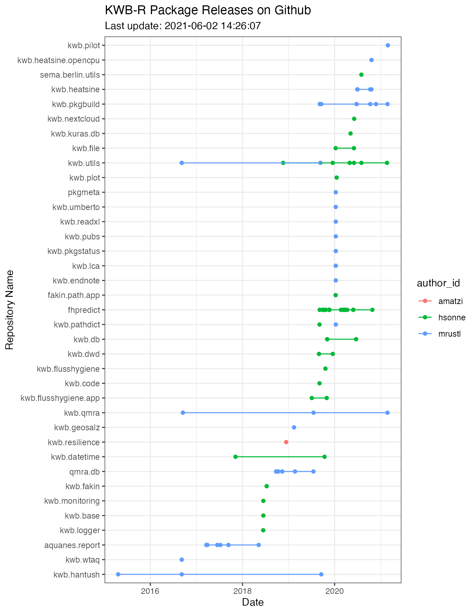

pkgmeta::get_gh_ratelimit()
#> # A tibble: 6 x 5
#> id limit used remaining reset
#> <chr> <int> <int> <int> <int>
#> 1 core 5000 1686 3314 1622568425
#> 2 search 30 0 30 1622566225
#> 3 graphql 5000 34 4966 1622566973
#> 4 integration_manifest 5000 0 5000 1622569765
#> 5 source_import 100 0 100 1622566225
#> 6 code_scanning_upload 500 0 500 1622569765
pkgs <- pkgmeta::get_github_packages()
#pkgs <- readRDS("rpackages.RData")
pkgmeta::plot_github_pkgs_over_time(pkgs)
### wait for 60 seconds in order to be in line with GitHub API limit
### <= 80/minute and <=5000/hour
#Sys.sleep(60)
pkgmeta::get_gh_ratelimit()
#> # A tibble: 6 x 5
#> id limit used remaining reset
#> <chr> <int> <int> <int> <int>
#> 1 core 5000 1689 3311 1622568425
#> 2 search 30 0 30 1622566228
#> 3 graphql 5000 34 4966 1622566973
#> 4 integration_manifest 5000 0 5000 1622569768
#> 5 source_import 100 0 100 1622566228
#> 6 code_scanning_upload 500 0 500 1622569768
pkgs_releases <- pkgmeta::github_packages_versions(repos = pkgs$full_name)
#> Repo: KWB-R/algoliar ... Error in as.Date.default(sapply(releases, kwb.utils::selectElements, "published_at")) :
#> do not know how to convert 'sapply(releases, kwb.utils::selectElements, "published_at")' to class "Date"
#> ok. (0.06s)
#> Repo: KWB-R/aquanes.report ... ok. (0.09s)
#> Repo: KWB-R/dwc.ar4gw ... Error in as.Date.default(sapply(releases, kwb.utils::selectElements, "published_at")) :
#> do not know how to convert 'sapply(releases, kwb.utils::selectElements, "published_at")' to class "Date"
#> ok. (0.07s)
#> Repo: KWB-R/dwc.wells ... Error in as.Date.default(sapply(releases, kwb.utils::selectElements, "published_at")) :
#> do not know how to convert 'sapply(releases, kwb.utils::selectElements, "published_at")' to class "Date"
#> ok. (0.06s)
#> Repo: KWB-R/fakin.path.app ... ok. (0.09s)
#> Repo: KWB-R/fhpredict ... ok. (0.13s)
#> Repo: KWB-R/ibathwater ... Error in as.Date.default(sapply(releases, kwb.utils::selectElements, "published_at")) :
#> do not know how to convert 'sapply(releases, kwb.utils::selectElements, "published_at")' to class "Date"
#> ok. (0.06s)
#> Repo: KWB-R/keys.lid ... Error in as.Date.default(sapply(releases, kwb.utils::selectElements, "published_at")) :
#> do not know how to convert 'sapply(releases, kwb.utils::selectElements, "published_at")' to class "Date"
#> ok. (0.05s)
#> Repo: KWB-R/kwb.abimo ... Error in as.Date.default(sapply(releases, kwb.utils::selectElements, "published_at")) :
#> do not know how to convert 'sapply(releases, kwb.utils::selectElements, "published_at")' to class "Date"
#> ok. (0.05s)
#> Repo: KWB-R/kwb.base ... ok. (0.07s)
#> Repo: KWB-R/kwb.budget ... Error in as.Date.default(sapply(releases, kwb.utils::selectElements, "published_at")) :
#> do not know how to convert 'sapply(releases, kwb.utils::selectElements, "published_at")' to class "Date"
#> ok. (0.05s)
#> Repo: KWB-R/kwb.code ... ok. (0.09s)
#> Repo: KWB-R/kwb.datetime ... ok. (0.08s)
#> Repo: KWB-R/kwb.db ... ok. (0.10s)
#> Repo: KWB-R/kwb.default ... Error in as.Date.default(sapply(releases, kwb.utils::selectElements, "published_at")) :
#> do not know how to convert 'sapply(releases, kwb.utils::selectElements, "published_at")' to class "Date"
#> ok. (0.06s)
#> Repo: KWB-R/kwb.demeau ... Error in as.Date.default(sapply(releases, kwb.utils::selectElements, "published_at")) :
#> do not know how to convert 'sapply(releases, kwb.utils::selectElements, "published_at")' to class "Date"
#> ok. (0.06s)
#> Repo: KWB-R/kwb.dwa.m150 ... Error in as.Date.default(sapply(releases, kwb.utils::selectElements, "published_at")) :
#> do not know how to convert 'sapply(releases, kwb.utils::selectElements, "published_at")' to class "Date"
#> ok. (0.05s)
#> Repo: KWB-R/kwb.dwd ... ok. (0.07s)
#> Repo: KWB-R/kwb.en13508.2 ... Error in as.Date.default(sapply(releases, kwb.utils::selectElements, "published_at")) :
#> do not know how to convert 'sapply(releases, kwb.utils::selectElements, "published_at")' to class "Date"
#> ok. (0.08s)
#> Repo: KWB-R/kwb.endnote ... ok. (0.10s)
#> Repo: KWB-R/kwb.event ... Error in as.Date.default(sapply(releases, kwb.utils::selectElements, "published_at")) :
#> do not know how to convert 'sapply(releases, kwb.utils::selectElements, "published_at")' to class "Date"
#> ok. (0.06s)
#> Repo: KWB-R/kwb.fakin ... ok. (0.08s)
#> Repo: KWB-R/kwb.file ... ok. (0.07s)
#> Repo: KWB-R/kwb.flusshygiene ... ok. (0.09s)
#> Repo: KWB-R/kwb.flusshygiene.app ... ok. (0.07s)
#> Repo: KWB-R/kwb.geosalz ... ok. (0.13s)
#> Repo: KWB-R/kwb.hantush ... ok. (0.07s)
#> Repo: KWB-R/kwb.heatsine ... ok. (0.09s)
#> Repo: KWB-R/kwb.heatsine.opencpu ... ok. (0.07s)
#> Repo: KWB-R/kwb.infoworks ... Error in as.Date.default(sapply(releases, kwb.utils::selectElements, "published_at")) :
#> do not know how to convert 'sapply(releases, kwb.utils::selectElements, "published_at")' to class "Date"
#> ok. (0.06s)
#> Repo: KWB-R/kwb.kuras.db ... ok. (0.07s)
#> Repo: KWB-R/kwb.lca ... ok. (0.07s)
#> Repo: KWB-R/kwb.logger ... ok. (0.07s)
#> Repo: KWB-R/kwb.matomo ... Error in as.Date.default(sapply(releases, kwb.utils::selectElements, "published_at")) :
#> do not know how to convert 'sapply(releases, kwb.utils::selectElements, "published_at")' to class "Date"
#> ok. (0.06s)
#> Repo: KWB-R/kwb.ml ... Error in as.Date.default(sapply(releases, kwb.utils::selectElements, "published_at")) :
#> do not know how to convert 'sapply(releases, kwb.utils::selectElements, "published_at")' to class "Date"
#> ok. (0.07s)
#> Repo: KWB-R/kwb.monitoring ... ok. (0.08s)
#> Repo: KWB-R/kwb.nextcloud ... ok. (0.09s)
#> Repo: KWB-R/kwb.odm ... Error in as.Date.default(sapply(releases, kwb.utils::selectElements, "published_at")) :
#> do not know how to convert 'sapply(releases, kwb.utils::selectElements, "published_at")' to class "Date"
#> ok. (0.06s)
#> Repo: KWB-R/kwb.ogre ... Error in as.Date.default(sapply(releases, kwb.utils::selectElements, "published_at")) :
#> do not know how to convert 'sapply(releases, kwb.utils::selectElements, "published_at")' to class "Date"
#> ok. (0.06s)
#> Repo: KWB-R/kwb.ogre.model ... Error in as.Date.default(sapply(releases, kwb.utils::selectElements, "published_at")) :
#> do not know how to convert 'sapply(releases, kwb.utils::selectElements, "published_at")' to class "Date"
#> ok. (0.07s)
#> Repo: KWB-R/kwb.orcid ... Error in as.Date.default(sapply(releases, kwb.utils::selectElements, "published_at")) :
#> do not know how to convert 'sapply(releases, kwb.utils::selectElements, "published_at")' to class "Date"
#> ok. (0.06s)
#> Repo: KWB-R/kwb.pathdict ... ok. (0.09s)
#> Repo: KWB-R/kwb.pilot ... ok. (0.07s)
#> Repo: KWB-R/kwb.pkgbuild ... ok. (0.10s)
#> Repo: KWB-R/kwb.pkgstatus ... ok. (0.07s)
#> Repo: KWB-R/kwb.plot ... ok. (0.12s)
#> Repo: KWB-R/kwb.prep ... Error in as.Date.default(sapply(releases, kwb.utils::selectElements, "published_at")) :
#> do not know how to convert 'sapply(releases, kwb.utils::selectElements, "published_at")' to class "Date"
#> ok. (0.08s)
#> Repo: KWB-R/kwb.pubs ... ok. (0.08s)
#> Repo: KWB-R/kwb.python ... Error in as.Date.default(sapply(releases, kwb.utils::selectElements, "published_at")) :
#> do not know how to convert 'sapply(releases, kwb.utils::selectElements, "published_at")' to class "Date"
#> ok. (0.05s)
#> Repo: KWB-R/kwb.qmra ... ok. (0.07s)
#> Repo: KWB-R/kwb.quantum ... Error in as.Date.default(sapply(releases, kwb.utils::selectElements, "published_at")) :
#> do not know how to convert 'sapply(releases, kwb.utils::selectElements, "published_at")' to class "Date"
#> ok. (0.05s)
#> Repo: KWB-R/kwb.read ... Error in as.Date.default(sapply(releases, kwb.utils::selectElements, "published_at")) :
#> do not know how to convert 'sapply(releases, kwb.utils::selectElements, "published_at")' to class "Date"
#> ok. (0.08s)
#> Repo: KWB-R/kwb.readxl ... ok. (0.09s)
#> Repo: KWB-R/kwb.resilience ... ok. (0.10s)
#> Repo: KWB-R/kwb.satellite ... Error in as.Date.default(sapply(releases, kwb.utils::selectElements, "published_at")) :
#> do not know how to convert 'sapply(releases, kwb.utils::selectElements, "published_at")' to class "Date"
#> ok. (0.07s)
#> Repo: KWB-R/kwb.site ... Error in as.Date.default(sapply(releases, kwb.utils::selectElements, "published_at")) :
#> do not know how to convert 'sapply(releases, kwb.utils::selectElements, "published_at")' to class "Date"
#> ok. (0.06s)
#> Repo: KWB-R/kwb.svn ... Error in as.Date.default(sapply(releases, kwb.utils::selectElements, "published_at")) :
#> do not know how to convert 'sapply(releases, kwb.utils::selectElements, "published_at")' to class "Date"
#> ok. (0.06s)
#> Repo: KWB-R/kwb.swmm ... Error in as.Date.default(sapply(releases, kwb.utils::selectElements, "published_at")) :
#> do not know how to convert 'sapply(releases, kwb.utils::selectElements, "published_at")' to class "Date"
#> ok. (0.06s)
#> Repo: KWB-R/kwb.test ... Error in as.Date.default(sapply(releases, kwb.utils::selectElements, "published_at")) :
#> do not know how to convert 'sapply(releases, kwb.utils::selectElements, "published_at")' to class "Date"
#> ok. (0.07s)
#> Repo: KWB-R/kwb.umberto ... ok. (0.06s)
#> Repo: KWB-R/kwb.utils ... ok. (0.11s)
#> Repo: KWB-R/kwb.vs2dh ... Error in as.Date.default(sapply(releases, kwb.utils::selectElements, "published_at")) :
#> do not know how to convert 'sapply(releases, kwb.utils::selectElements, "published_at")' to class "Date"
#> ok. (0.06s)
#> Repo: KWB-R/kwb.wtaq ... ok. (0.07s)
#> Repo: KWB-R/pkgmeta ... ok. (0.09s)
#> Repo: KWB-R/qmra.db ... ok. (0.11s)
#> Repo: KWB-R/r2q ... Error in as.Date.default(sapply(releases, kwb.utils::selectElements, "published_at")) :
#> do not know how to convert 'sapply(releases, kwb.utils::selectElements, "published_at")' to class "Date"
#> ok. (0.06s)
#> Repo: KWB-R/sema.berlin.utils ... ok. (0.07s)
#> Repo: KWB-R/urbanAnnualRunoff ... Error in as.Date.default(sapply(releases, kwb.utils::selectElements, "published_at")) :
#> do not know how to convert 'sapply(releases, kwb.utils::selectElements, "published_at")' to class "Date"
#> ok. (0.06s)
#> Repo: KWB-R/wasserportal ... Error in as.Date.default(sapply(releases, kwb.utils::selectElements, "published_at")) :
#> do not know how to convert 'sapply(releases, kwb.utils::selectElements, "published_at")' to class "Date"
#> ok. (0.07s)
pkgmeta::plot_github_pkgs_releases(pkgs_releases)